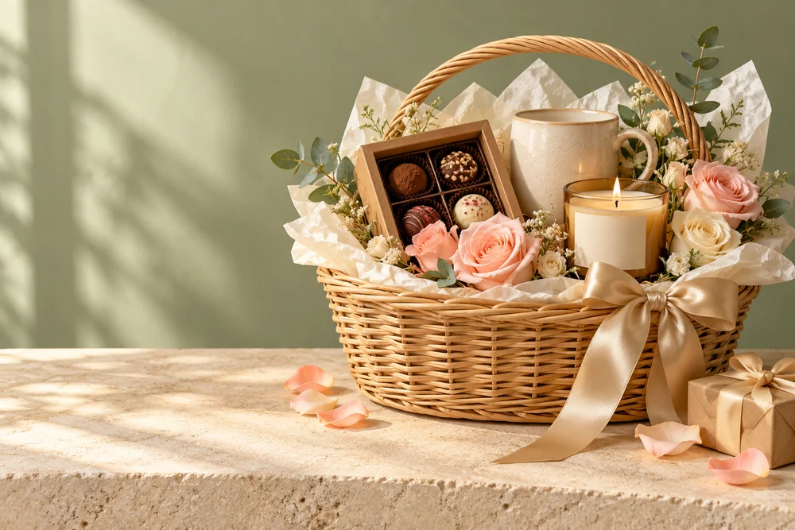

01 · HampersThe Signature Hamper
₹1,899
What’s inside
Some celebrations call for a little of everything. The Signature Hamper brings soft blush flowers, a favourite-drink moment and a sweet finish into one beautifully balanced gift. Its cream and champagne palette feels welcoming on a birthday table, a new-home shelf or a quiet anniversary evening.
- Blush roses arranged in an open wicker hamper
- Ceramic mug for a favourite hot drink
- Candle for a softly lit corner
- Small chocolate box and champagne ribbon
The woven basket gives the arrangement a warm, generous feel and can be kept for little household essentials afterwards. Choose it for someone who enjoys flowers as much as the small comforts of everyday life.